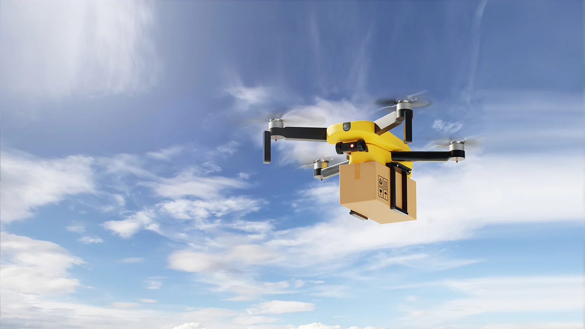

Fast Drone Delivery
Deliver At your Door Step

Order Your Tasty Food

Delivery Your Grocery Item in 10 min
Delivery Your Gadget With Secured Package

Deliver At your Door Step
Order Your Tasty Food
Delivery Your Grocery Item in 10 min
Delivery Your Gadget With Secured Package
Drone delivery is a logistics method that uses unmanned aerial vehicles (UAVs) to transport packages directly from a warehouse or hub to a customer's doorstep, bypassing traditional road transport. After an order is placed through an app, a drone is loaded with the package and follows a GPS-guided flight path to the destination, where it drops off the item and returns automatically to recharge. This method offers much faster delivery, often within minutes, while reducing traffic congestion and fuel emissions, and is especially useful for remote areas or urgent items like medicines and small parcels. However, challenges remain, including limited carrying capacity (usually under 5kg), sensitivity to weather conditions, airspace regulations, and battery range limits. Companies such as Amazon (Prime Air), Zipline, and Wing (by Google) are already using drone delivery for medical supplies, groceries, and small packages in select cities, and the technology is expected to expand rapidly as regulations and infrastructure continue to develop worldwide.
📩DroneDelivery@gmail.com
📞+044 04455 04466